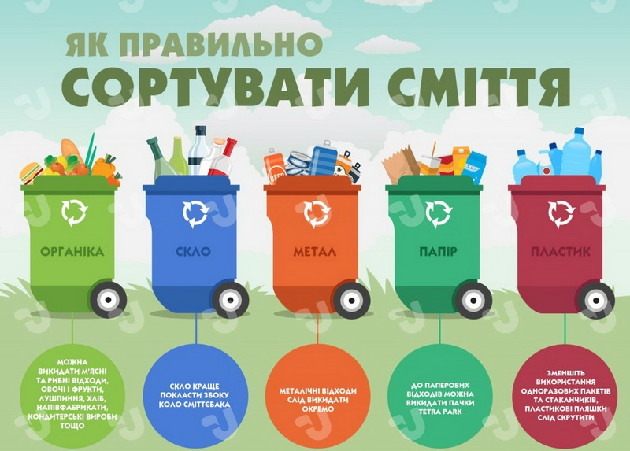

Хитрості в сортуванні сміття
1.Потрібно сортувати сміття по контейнерам
2.Вдома можна поставити спеціальні контейнери для різних видів сміття
3.Відмовся від полеітеленового пакетика у магазині
4.Здай скло/пластик на переробку
5.Використовуй тару для зберігання продуктів кілька разів (повторне використання)
